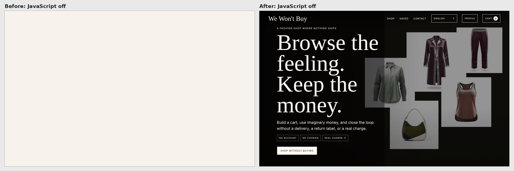

Until this fix, the body of We Won't Buy's index.html looked like this:
<body>
<div id="app"></div>
<script type="module" src="/src/main.js"></script>
</body>
Its Lighthouse SEO score was 92.
Both were true at the same time, and the score hid the problem. This post is about how that happened, the small build step that fixed it, and the first lesson in something I'm bad at: marketing.
A blind spot of context
I spent more than ten years as a software architect on large B2B platforms. On systems like those, search is not a requirement. Users arrive through contracts, logins and integrations, and nobody asks whether a crawler can read the dashboard.
So when I built We Won't Buy, a fake fashion shop for real shopping urges, over a weekend, I shipped it the way I'd ship an internal app: a pure client-side Vite SPA, with everything rendered by JavaScript in the browser. Discoverability wasn't on the list. A blind spot of context, not of knowledge: once it was pointed out, the cause and the fix were obvious.
That blind spot is also why the project exists. With AI, building a small app takes a weekend. Getting people to find it, care about it and come back still doesn't, and it takes skills I never needed on B2B platforms: SEO, social networks, copywriting, positioning, analytics. In July I wrote that the next adventure was less about code and more about marketing. We Won't Buy is my training ground, and this is lesson one: SEO.
Why Lighthouse gave an empty page 92
I ran Lighthouse locally against vite preview on the main branch. SEO: 92. Not bad, I thought.
The missing points were not about the empty div. The site had no robots.txt, so /robots.txt fell through to the SPA and returned the app's HTML. Lighthouse tried to read a web page as crawler rules and flagged it.
The empty div didn't cost a single point, and that's the part worth remembering. Lighthouse audits the page in Chrome, with JavaScript running. It saw the shop the way a visitor does: heading, copy, products. It couldn't see the problem, because the problem only exists for clients that don't run JavaScript.
There are more of those than I assumed. Googlebot renders JavaScript, though as a separate pass after the crawl, which can come with a delay. But a December 2024 analysis by Vercel found that none of the major AI crawlers, including GPTBot, ClaudeBot and PerplexityBot, execute it. Link previews only read the head, and mine was fine: the title, description and social image were static tags, so a shared link still got a preview card. But the card was all there was. Anything else that read the HTML found a shop with nothing in it. A bit ironic, for a shop where nothing ships.

Same URL, JavaScript off. Before / after.
A second pair of eyes
Lighthouse didn't find the empty div. Grok Bot did: xAI's platform for building your own bots. I use mine as a fast second pair of eyes on the marketing side, and its audit of the site came back with the empty <div id="app">.
It suggested rendering the first view directly in Node at build time, rather than adopting a server-side rendering framework or snapshotting the page with a headless browser, a real Chrome without a window that runs the app during the build and saves the result. With no backend and a plain Node build, rendering in Node was the clear pick. Then it covered the part I would have skipped: the marketing checklist around the fix. It wrote the briefs, its developer agent implemented them and opened the pull requests, and I reviewed and merged.
As I wrote in LLMs as non-deterministic compilers, I don't write much code by hand anymore. The rules are the same whoever writes the code: a claim about the HTML can be checked against the HTML, a score can be rerun, and trade-offs should be written down. One PR did exactly that: it said FAQ rich results were unlikely for a site like this, and that its own translations deserved a native speaker's read.
The fix: a build step, not a framework
The app's markup is a pure function of its state. The render code lives in src/view.js, whose renderAppHtml(state) never touches the browser: localStorage and the visitor's language are read only when the client starts. So Node can import it, render the default first-visit state (English, empty cart, zero totals, the first 24 products) and write the result into the page.
That's a small Vite plugin, here slightly simplified:
import { createDefaultState, renderAppHtml } from "../src/view.js";
const placeholder = '<div id="app"></div>';
export function prerenderApp() {
return {
name: "prerender-app",
apply: "build",
transformIndexHtml(html) {
const appHtml = renderAppHtml(createDefaultState());
return {
html: html.replace(placeholder, () => `<div id="app" data-prerendered>${appHtml}</div>`),
tags: [{
tag: "script",
children: 'document.documentElement.classList.add("js");',
injectTo: "head-prepend",
}],
};
},
};
}
The real file adds two guards: the build fails unless the placeholder appears exactly once, and unless the rendered markup has exactly one <h1>. Because transformIndexHtml runs for every HTML entry in the build, the campaign landing pages get the same treatment without a second list.
The built index.html now starts like this (trimmed):
<div id="app" data-prerendered>
<header class="site-header">…</header>
<main id="top">
<section class="hero" aria-label="We Won't Buy">
<img src="/assets/hero-editorial-1800.webp" … />
<div class="hero-copy">
<p class="eyebrow">A fashion shop where nothing ships</p>
<h1>Browse the feeling. Keep the money.</h1>
<p>Build a cart, use imaginary money, and close the loop without a delivery, a return label, or a real charge.</p>
…
The second half of the plugin is the interesting trade-off. The prerendered markup is the English default, but a returning visitor may have picked Italian or left items in the cart. Showing the English page and then swapping it would flash the wrong content. So a one-line script in the head adds a js class to <html> before the body is parsed, and one CSS rule hides #app[data-prerendered] under it. Visitors with JavaScript never see the prerendered markup: the client renders their own language and state, then removes the attribute. Crawlers and no-JS visitors get the full first view.
The cost is written down in the decision record. Prerendering doesn't make the first paint faster for JavaScript visitors, and if the app bundle fails to load, they still see an empty page, exactly as before. For a site whose problem was being readable at all, that's a fair trade.
No SSR framework, no headless browser, and package.json didn't gain a dependency.
The marketing checklist
The rest was plumbing, the kind a marketer would have started with. A robots.txt that allows everything and points to a sitemap.xml listing only the root. A WebApplication JSON-LD block with a free Offer, and no rating, because there isn't a real one. The campaign landing pages (/go/receipt/, /go/ritual/, /go/privacy/) exist so analytics can tell which message brought a visit. They serve the same body as the home page, so their canonical URL now points at the root, while og:url keeps the campaign path for shared links.
Then the words: a new title, "We Won't Buy: A No-Buy Shopping Simulator for Impulse Urges", a new description, and an eight-question FAQ in the site's five languages, with a FAQPage JSON-LD block mirroring the English answers. Rich results weren't the goal: in 2023 Google limited FAQ rich results to well-known government and health sites. The point is plain, crawlable text.
One honest limit: the five languages share one URL, so a crawler sees the English page. For now the translations help visitors, not search. Separate URLs per language, with hreflang, are a lesson for another day.
Tests and results
Playwright loads every entry with JavaScript disabled and checks the single <h1>, the hero copy and the first batch of products. Another test blocks the app bundle and checks that the prerendered markup stays hidden: the trade-off above, pinned down. The last group checks that the client really takes over on every entry. Playwright drives a headless browser, so there is one after all, but at test time, checking the build rather than producing it.
The result: Lighthouse SEO 100 on / and /go/receipt/, measured locally with vite preview. A local measurement, not a ranking. Whether search engines and AI crawlers actually pick the page up takes weeks to show, so I'll come back with Search Console numbers in a later lesson.
What I took from it
Context sets the requirements, and the requirements decide what you look at. On a B2B platform nobody asks what a crawler sees; on a public side project, it's one of the first questions. Next time discoverability goes on the list on day one.
A green score is not the same as being visible. Lighthouse runs JavaScript, so it audits what visitors see, not what every crawler gets. The cheapest check is the raw one: curl your homepage and read what comes back.
When the markup is a pure function of state, prerendering is a small build plugin, not a new framework.
And a fast second pair of eyes from outside your usual area is worth having, as long as the usual rules still apply: look at the raw output, ask for the trade-offs, read the diff.
Thank you for taking the time to read this post. You can try the shop at wewontbuy.com.